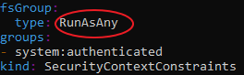
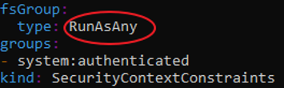
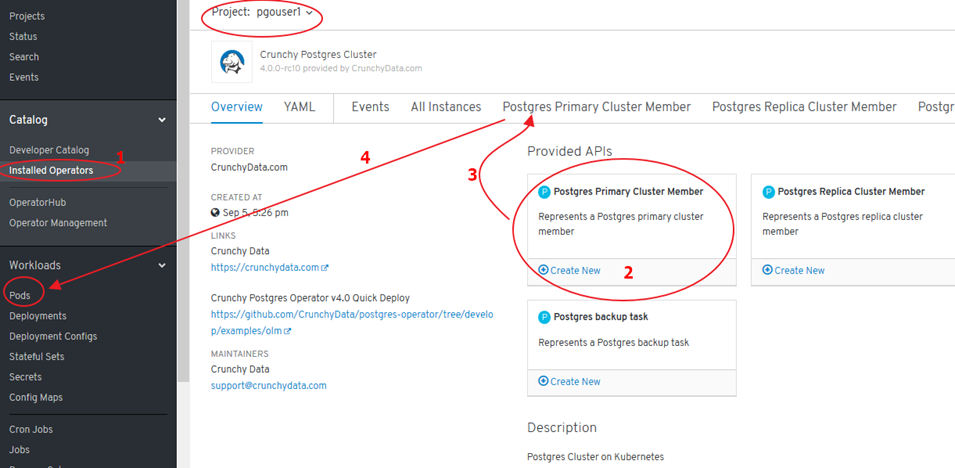
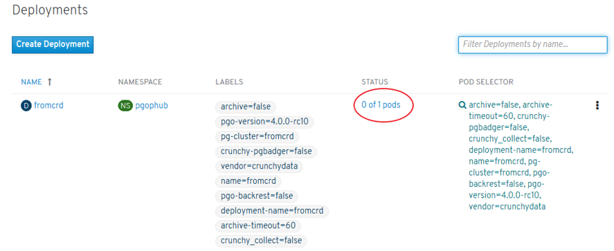
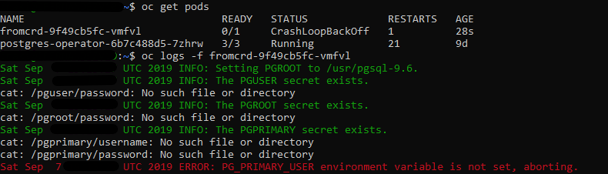

Crunchy Data PostgreSQL Operator
- Introduction
- Crunchy Data Developer Portal
- Crunchy Data Postgres Operator in OpenShift 4. Overview & Proof of Concept
- Crunchydata Postgres Operator 3.5
- Crunchydata Postgres Operator 4.0.1
- Crunchydata Postgres Operator 4.0.1 Community Edition
- Service Accounts
- Roles assigned to Service Accounts
- Security Context Constraints (SCC)
- Add a SCC to a Project
- Environment setup. Port Forward and WSL
- Cluster Deployment and Operation with pgo
- Psql access from postgres operator POD
- List Databases with psql
- Access from another POD within the cluster with psql client
- Access from another POD within the cluster with Pgadmin4 of Crunchy containers Community Edition
- Debugging Crunchydata Postgres Operator 4.0.1 Community Edition
- Certified Crunchydata Postgres Operator (OLM/OperatorHub). Manual Setup
Introduction
- crunchydata.com
- redhat.com: Overview - Crunchy Data PostgreSQL on Red Hat OpenShift Container Storage 🌟
- learn.crunchydata.com 🌟
- github.com/CrunchyData
- github.com/CrunchyData/postgres-operator
- Documentation: Crunchy Data Container Suite 🌟
- crunchydata blog: Deploying Active-Active PostgreSQL on Kubernetes
- crunchydata blog: What’s New in Crunchy PostgreSQL Operator 4.0
- slideshare.net: Deploying PostgreSQL on Kubernetes
- slideshare.net: Operating PostgreSQL at Scale with Kubernetes
- Youtube: Demo of Crunchy Data Postgres Operator v1.0.0 (2017)
- Youtube: Crunchy PostgreSQL Operator for Kubernetes 3.4 Overview (2018)
- Youtube: OpenShift Meetup Tokyo #05 - Operator and Operator Lifecycle Manager on OpenShift (2019, openshift 4.1)
- info.crunchydata.com: Monitoring PostgreSQL clusters in kubernetes
- info.crunchydata.com: Deploy High-Availability PostgreSQL Clusters on Kubernetes by Example
- info.crunchydata.com: Migrating from Oracle to PostgreSQL: Tips and Tricks
- info.crunchydata.com: Scheduled PostgreSQL Backups and Retention Policies with Kubernetes
- info.crunchydata.com: Guard Against Transaction Loss with PostgreSQL Synchronous Replication
- info.crunchydata.com: Crunchy PostgreSQL for Kubernetes 4.3 Released Crunchy #PostgreSQL for #Kubernetes 4.3 released! Now supports multi-Kubernetes deployments, easier customization + installation, TLS, pgAdmin 4, improved pgBouncer support, and much more!
- info.crunchydata.com: Deploy pgAdmin4 with PostgreSQL on Kubernetes
- info.crunchydata.com: Multi-Kubernetes Cluster PostgreSQL Deployments
- info.crunchydata.com: Quickly Document Your Postgres Database Using psql Meta-Commands
- info.crunchydata.com: Fast CSV and JSON Ingestion in PostgreSQL with COPY
- info.crunchydata.com: Composite Primary Keys, PostgreSQL and Django
- info.crunchydata.com: Getting Started with PostgreSQL Operator 4.3 in OpenShift
- info.crunchydata.com: Introducing the Postgres Prometheus Adapter
- info.crunchydata.com: Getting Started with PostgreSQL Operator 4.3 in OpenShift
- info.crunchydata.com: Deploying Active-Active PostgreSQL on Kubernetes
- opensource.com: Scaling PostgreSQL with Kubernetes Operators 🌟 Operators let users create standardized interfaces for managing stateful applications, like PostgreSQL, across Kubernetes-enabled cloud environments.
- info.crunchydata.com: Setup ora2pg for Oracle to Postgres Migration
- info.crunchydata.com: pgBackRest - Performing Backups on a Standby Cluster
- thenewstack.io: Advanced Kubernetes Namespace Management with the PostgreSQL Operator 🌟
- postgresql.org: Crunchy PostgreSQL Operator 4.5: Enhanced Monitoring, Custom Annotations, PostgreSQL 13 🌟
- info.crunchydata.com: How to Setup PostgreSQL Monitoring in Kubernetes
- redhat.com: Crunchy Data PostgreSQL on Red Hat OpenShift Container Storage (Overview) 🌟
- info.crunchydata.com: PostgreSQL Monitoring for Application Developers: The DBA Fundamentals
- youtube: OCB: High Availability PostgreSQL and more on OpenShift - Jonathan Katz (Crunchy Data) 🌟 Learn how the PostgreSQL Operator from Crunchy Data makes it easy to deploy high availability Postgres clusters on OpenShift. Beyond that, we’ll look at how the Operator pattern makes it possible to run your own open source database-as-a-service and cover the essential features: provisioning, HA, disaster recovery, monitoring, and how to do it all securely!
- info.crunchydata.com: Tuning Your Postgres Database for High Write Loads
- info.crunchydata.com: Using the PostgreSQL Operator with Rook Ceph Storage
- info.crunchydata.com: Multi-Kubernetes Cluster PostgreSQL Deployments
- developer.ibm.com: Deploy a Crunchy PostgreSQL for Kubernetes Operator to an OpenShift cluster 🌟 Follow these steps to deploy a supported Crunchy PostgreSQL for Kubernetes operator from Red Hat Marketplace to an OpenShift cluster
- info.crunchydata.com: An Easy Recipe for Creating a PostgreSQL Cluster with Docker Swarm
- info.crunchydata.com: Deploying the PostgreSQL Operator on GKE
- info.crunchydata.com: Using GitOps to Self-Manage Postgres in Kubernetes 🌟
- info.crunchydata.com: Kubernetes Pod Tolerations and Postgres Deployment Strategies
- blog.crunchydata.com: Helm, GitOps and the Postgres Operator
- blog.crunchydata.com: Crunchy Postgres Operator 4.6.0 🌟
- blog.crunchydata.com: Deploy PostgreSQL With TLS in Kubernetes
- blog.crunchydata.com: Announcing Google Cloud Storage (GCS) Support for pgBackRest
- youtube: Install and use Crunchy PostgreSQLfor OpenShift operator for simple todo app on OpenShift 🌟
- blog.crunchydata.com: Query Optimization in Postgres with pg_stat_statements
- blog.crunchydata.com: Kubernetes Pod Tolerations and Postgres Deployment Strategies 🌟
- blog.crunchydata.com: Active-Active PostgreSQL Federation on Kubernetes
- blog.crunchydata.com: Multi-Kubernetes Cluster PostgreSQL Deployments
- blog.crunchydata.com: Next Generation Crunchy Postgres for Kubernetes 5.0 Released
- blog.crunchydata.com: pgBackRest Point-In-Time Recovery Using Crunchy PostgreSQL Operator
- blog.crunchydata.com: Using Cert Manager to Deploy TLS for Postgres on Kubernetes
- dzone: PostgreSQL HA and Kubernetes I share my thoughts about how to set up a PostgreSQL Database in Kubernetes with some level of high availability, introducing 3 different architectural styles to do so.
- blog.crunchydata.com: Can’t Resize your Postgres Kubernetes Volume? No Problem!
- blog.crunchydata.com: Your Guide to Connection Management in Postgres 🌟
- blog.crunchydata.com: PostgreSQL 14 on Kubernetes (with examples!)
- blog.crunchydata.com: Kubernetes + Postgres Cluster From Scratch on Rocky 8
- blog.crunchydata.com: Kubernetes + Postgres Cluster From Scratch on Rocky 8
- blog.crunchydata.com: Announcing Postgres Container Apps: Easy Deploy Postgres Apps With Postgres Container Apps you can, from directly inside Postgres with a simple function call, spin up a container that is running right alongside your Postgres database.
Crunchy Data Developer Portal
- Announcing the Crunchy Data Developer Portal
- Crunchy Data Developer Portal Self-service tools for developers and data scientists to easily get productive with PostgreSQL and Crunchy Data products.
Crunchy Data Postgres Operator in OpenShift 4. Overview & Proof of Concept
- In earlier days, Red Hat recommended running PostgreSQL database outside the Kubernetes cluster. Now, with Kubernetes Operator technology, you can run stateful database applications on Kubernetes.
- Crunchy PostgreSQL Operator extends Kubernetes to give you the power to easily create, configure and manage PostgreSQL clusters at scale. When combined with the Crunchy PostgreSQL Container Suite, the Crunchy PostgreSQL Operator provides an open source software solution for PostgreSQL scaling, high-availability, disaster recovery, monitoring, and more. All of this capability comes with the repeatability and automation that comes from Operators on Kubernetes.
- Crunchy PostgreSQL Operator is open source and developed in close collaboration with users to support enterprise deployments of cloud agnostic PostgreSQL-as-a-Service capability. This release comes after extensive feedback from our customers and the community to ensure the scalability and security that sysadmins, DBAs, and developers have come to rely on.
- Crunchy PostgreSQL and Openshift
- Crunchy Postgres Solutions:
- Postgres Operator Community Edition:
- ‘pgo’ CLI tool
- Not certified by Red Hat
- The Operator can be deployed by multiple methods including:
- The PostgreSQL Operator Installer with kubectl
- Install Operator Using Bash (the one used in this overview)
- Ansible playbook installation
- CLI installation using OLM (Deprecated): new CatalogSource added via “pgo.catalogsource.yaml”.
- Openshift Console installation using OLM (OperatorHub):
- New CatalogSource requirement.
- CLI settings required.
- Certified Crunchydata Postgres Operator (OLM/OperatorHub):
- Openshift Console installation using OLM (OperatorHub): One-click deployment and Web based operation
- No ‘pgo’ CLI tool? (compatibility issues: unable to find in github the version that matches the server API - Sept 2019)
- Certified by Red Hat
- Provided by CrunchyData
- Other non-certified installations (unsupported by Red Hat): with or without OLM, CLI, etc.
- Postgres Operator Community Edition:
- Crunchy Containers Community Edition:
- Installation:
- Not certified by Red Hat

Crunchydata Postgres Operator 3.5
- Release date: Januay 2019
- pgBackRest Architecture Enhancements
- pgBackRest Point-In-Time-Recovery
- Fast Failover
- Archive Storage Configuration
- Preferred Failover Node Label
- pgo-scheduler
Crunchydata Postgres Operator 4.0.1
- Release date: June 2019
- Namespace Deployment Options: Ability to deploy the operator its own namespace but manage PostgreSQL clusters in multiple namespace. The new namespace management features lets users create multi-tenant PostgreSQL environments that add further isolation and security to their deployments.
- Further Enhancements to pgBackRest Integration: Perform pgBackRest backups to Amazon S3. This allows users to create an automated, geographically distributed, and hybrid cloud disaster recovery strategy.
- Integrated PostgreSQL Benchmarking
- Ansible Playbook Based Installation
- Operator Lifecycle Management (OLM): The OLM project is a component of the Operator Framework, an open source toolkit to manage Operators, in an effective, automated, and scalable way. OLM concepts were included into Crunchy PostgreSQL Operator to assist in the deployment on Kubernetes using OLM integration.
Crunchydata Postgres Operator 4.0.1 Community Edition
Service Accounts
- Service accounts give us flexibility to control access to API without sharing user’s credentials.
- Service Accounts are also used by pods and other non-human actors to perform various actions and are a central vehicle by which their access to resources is managed. By default, three service accounts are created in each project:
- Builder: Used by build pods and assigned the system:image-builder role, which grants push capability into the internal registry to any image stream in the project.
- Deployer: Used by deploy pods and assigned the system:deployer role, which allows modifying replication controllers in the project.
- Default: Used by all other pods by default.
- You can see them by running the following command:
oc get serviceaccounts
oc get sa
- Running a Pod with a Different Service Account. You can run a pod with a service account other than the default:
- Edit the deployment configuration:
$ oc edit dc/<deployment_config> - Add the serviceAccount and serviceAccountName parameters to the spec field, and specify the service account you want to use:
- Edit the deployment configuration:
spec:
securityContext: {}
serviceAccount: <service_account>
serviceAccountName: <service_account>
-
Refs:
-
Each service account is represented by the ServiceAccount resource and is associated with two additional secrets for access to the OpenShift API and the internal registry:
$ oc describe serviceaccounts/default
Name: default
Namespace: pgouser1
Labels: <none>
Annotations: <none>
Image pull secrets: default-dockercfg-nrhwt
Mountable secrets: default-token-vm8b5
default-dockercfg-nrhwt
Tokens: default-token-p6rhz
default-token-vm8b5
Events: <none>
- The service account can be created and deleted with a simple command:
oc create sa myserviceaccountoc delete sa/myserviceaccount
- Every service account is also a member of two groups:
- system:serviceaccounts, which includes all service accounts in the cluster
- system:serviceaccounts:<project>, which includes all service accounts in the project
Roles assigned to Service Accounts
- When you create a pod, if you do not specify a service account, it is automatically assigned the default service account in the same namespace. If you get the raw json or yaml for a pod you have created (e.g.
oc get pods/podname -o yaml), you can see the spec.serviceAccountName field has been automatically set. - You can grant privileges to groups of service accounts, which will effectively grant those privileges to all accounts in the group:
$ oc adm policy add-role-to-group view system:serviceaccounts -n myproject
role "view" added: "system:serviceaccounts"
- For example, to grant view privileges to all service accounts in the cluster in the project myproject:
$ oc adm policy remove-role-from-group view system:serviceaccounts –n myproject
role "view" removed: "system:serviceaccounts"
Security Context Constraints (SCC)
- Security Context Constraints (SCCs) control what actions pods can perform and what resources they can access.
- SCCs combine a set of security configurations into a single policy object that can be applied to pods.
- These security configurations include, but are not limited to, Linux Capabilities, Seccomp Profiles, User and Group ID Ranges, and types of mounts.
- OpenShift ships with several SCCs:
- The most constrained is the restricted SCC, and the least constrained is the privileged SCC:
oc edit scc restrictedoc edit scc privileged
- The other SCCs provide intermediate levels of constraint for various use cases.
- The restricted SCC is granted to all authenticated users by default.
- The default SCC for most pods should be the restricted SCC.
- The most constrained is the restricted SCC, and the least constrained is the privileged SCC:
- If required, a cluster administrator may allow certain pods to run with different SCCs. Pods should be run with the most restrictive SCC possible. Pods inherit their SCC from the Service Account used to run the pod. With the default project template, new projects get a Service Account named default that is used to run pods. This default service account is only granted the ability to run the restricted SCC.
 

SCC Recommendations
- Use OpenShift’s Security Context Constraint feature, which has been contributed to Kubernetes as Pod Security Policies (PSP). PSPs are still beta in Kubernetes 1.10, 1.11, 1.12, 1.13, 1.14, 1.15 .
- Use the restricted SCC as the default
- For pods that require additional access, use the SCC that grants the least amount of additional privileges or create a custom SCC
- Remediation: Apply the SCC with the least privilege required
- Audit:
- To show all available SCCs:
oc describe scc - To audit a single pod:
- To show all available SCCs:
oc describe pod <POD> | grep openshift.io\/scc
openshift.io/scc: restricted
-
Problem: Default SCC is “restricted” SCC -> Crunchydata Postgres Cluster PODs are not rolled out
oc get rs:

oc describe rs mycluster5-lgyb-84b58f5dd9: Warning FailedCreate 3m24s (x17 over 7m30s) replicaset-controller Error creating: pods “mycluster5-lgyb-84b58f5dd9-” is forbidden: unable to validate against any security context constraint: [fsGroup: Invalid value: []int64{26}: 26 is not an allowed group]
Add a SCC to a Project
- SCCs are not granted directly to a project. Instead, you add a service account to an SCC and either specify the service account name on your pod or, when unspecified, run as the default service account.
- To add a SCC to a user:
oc adm policy add-scc-to-group <scc_name> <group_name> - To add a SCC to all service accounts in a namespace:
oc adm policy add-scc-to-group <scc_name> system:serviceaccounts:<serviceaccount_namespace> - If you are currently in the project to which the service account belongs, you can use the -z flag and just specify the serviceaccount_name:
oc adm policy add-scc-to-user <scc_name> -z <serviceaccount_name> -
Examples:
oc describe scc anyuidoc adm policy add-scc-to-group anyuid system:serviceaccounts:pgouser1-
‘default’ serviceAccount:
oc adm policy add-scc-to-user anyuid system:serviceaccounts:pgouser1:default -
User registered in Identity Provider:
oc adm policy add-scc-to-user anyuid myuser -
Custom serviceAccount:
oc adm policy add-scc-to-user anyuid system:serviceaccounts:pgouser1:my-sa
-
Refs:
Workflow1 without custom Service Account and without DeploymentConfig
Workflow2 with custom Service Account and without DeploymentConfig
- Create a custom ServiceAccount and add a role to it within a Project:
oc project pgouser1oc get sccoc create serviceaccount my-sa –n pgouser1oc describe sa my-saoc get sccoc adm policy add-scc-to-user anyuid system:serviceaccount:pgouser1:my-saoc policy add-role-to-user edit system:serviceaccount:pgouser1:my-sa- Alternative to step #6:
oc edit scc anyuid
users:
- system:serviceaccount:pgouser1:my-sa
-
Other commands of interest:
oc get roleoc describe role pgo-roleoc edit role pgo-role
-
References:
Workflow3 with custom service Account and DeploymentConfig
Environment setup. Port Forward and WSL
- Deployment method used in this presentation: Install Operator Using Bash
- Config files setup by installer are saved in:
- “pgo” Project -> Deployments
- “pgo” Project -> Deployment Configs (empty, openshift feature not provided by CrunchyData)
- “pgo” Project -> Secrets
- “pgo” Project -> Config Maps
- References:
- WSL (Windows Subystem for Linux): alog/olog/clog functions must be adapted to be run in WSL’s Ubuntu:
vim $HOME/.bashrc
# ~/.bashrc: executed by bash(1) for non-login shells.
# see /usr/share/doc/bash/examples/startup-files (in the package bash-doc)
# for examples
# If not running interactively, don't do anything
case $- in
*i*) ;;
*) return;;
esac
# don't put duplicate lines or lines starting with space in the history.
# See bash(1) for more options
HISTCONTROL=ignoreboth
# append to the history file, don't overwrite it
shopt -s histappend
# for setting history length see HISTSIZE and HISTFILESIZE in bash(1)
HISTSIZE=1000
HISTFILESIZE=2000
# check the window size after each command and, if necessary,
# update the values of LINES and COLUMNS.
shopt -s checkwinsize
# If set, the pattern "**" used in a pathname expansion context will
# match all files and zero or more directories and subdirectories.
#shopt -s globstar
# make less more friendly for non-text input files, see lesspipe(1)
[ -x /usr/bin/lesspipe ] && eval "$(SHELL=/bin/sh lesspipe)"
# set variable identifying the chroot you work in (used in the prompt below)
if [ -z "${debian_chroot:-}" ] && [ -r /etc/debian_chroot ]; then
debian_chroot=$(cat /etc/debian_chroot)
fi
# set a fancy prompt (non-color, unless we know we "want" color)
case "$TERM" in
xterm-color|*-256color) color_prompt=yes;;
esac
# uncomment for a colored prompt, if the terminal has the capability; turned
# off by default to not distract the user: the focus in a terminal window
# should be on the output of commands, not on the prompt
#force_color_prompt=yes
if [ -n "$force_color_prompt" ]; then
if [ -x /usr/bin/tput ] && tput setaf 1 >&/dev/null; then
# We have color support; assume it's compliant with Ecma-48
# (ISO/IEC-6429). (Lack of such support is extremely rare, and such
# a case would tend to support setf rather than setaf.)
color_prompt=yes
else
color_prompt=
fi
fi
if [ "$color_prompt" = yes ]; then
PS1='${debian_chroot:+($debian_chroot)}\[\033[01;32m\]\u@\h\[\033[00m\]:\[\033[01;34m\]\w\[\033[00m\]\$ '
else
PS1='${debian_chroot:+($debian_chroot)}\u@\h:\w\$ '
fi
unset color_prompt force_color_prompt
# If this is an xterm set the title to user@host:dir
case "$TERM" in
xterm*|rxvt*)
PS1="\[\e]0;${debian_chroot:+($debian_chroot)}\u@\h: \w\a\]$PS1"
;;
*)
;;
esac
# enable color support of ls and also add handy aliases
if [ -x /usr/bin/dircolors ]; then
test -r ~/.dircolors && eval "$(dircolors -b ~/.dircolors)" || eval "$(dircolors -b)"
alias ls='ls --color=auto'
#alias dir='dir --color=auto'
#alias vdir='vdir --color=auto'
alias grep='grep --color=auto'
alias fgrep='fgrep --color=auto'
alias egrep='egrep --color=auto'
fi
# colored GCC warnings and errors
#export GCC_COLORS='error=01;31:warning=01;35:note=01;36:caret=01;32:locus=01:quote=01'
# some more ls aliases
alias ll='ls -alF'
alias la='ls -A'
alias l='ls -CF'
# Add an "alert" alias for long running commands. Use like so:
# sleep 10; alert
alias alert='notify-send --urgency=low -i "$([ $? = 0 ] && echo terminal || echo error)" "$(history|tail -n1|sed -e '\''s/^\s*[0-9]\+\s*//;s/[;&|]\s*alert$//'\'')"'
# Alias definitions.
# You may want to put all your additions into a separate file like
# ~/.bash_aliases, instead of adding them here directly.
# See /usr/share/doc/bash-doc/examples in the bash-doc package.
if [ -f ~/.bash_aliases ]; then
. ~/.bash_aliases
fi
# enable programmable completion features (you don't need to enable
# this, if it's already enabled in /etc/bash.bashrc and /etc/profile
# sources /etc/bash.bashrc).
if ! shopt -oq posix; then
if [ -f /usr/share/bash-completion/bash_completion ]; then
. /usr/share/bash-completion/bash_completion
elif [ -f /etc/bash_completion ]; then
. /etc/bash_completion
fi
fi
#########################################
# CRUNCHYDATA POSTGRES OPERATOR SETTINGS:
#########################################
# operator env vars
export PATH=$PATH:$HOME/odev/bin
export PGO_APISERVER_URL=https://127.0.0.1:18443
#export PGO_APISERVER_URL=https://172.25.212.138:8443
export PGO_CA_CERT=$HOME/odev/src/github.com/crunchydata/postgres-operator/conf/postgres-operator/server.crt
export PGO_CLIENT_CERT=$HOME/odev/src/github.com/crunchydata/postgres-operator/conf/postgres-operator/server.crt
export PGO_CLIENT_KEY=$HOME/odev/src/github.com/crunchydata/postgres-operator/conf/postgres-operator/server.key
#alias setip='export PGO_APISERVER_URL=https://`kubectl get service postgres-operator -o=jsonpath="{.spec.clusterIP}"`:18443'
#alias alog='kubectl logs `kubectl get pod --selector=name=postgres-operator -o jsonpath="{.items[0].metadata.name}"` -c apiserver'
#alias olog='kubectl logs `kubectl get pod --selector=name=postgres-operator -o jsonpath="{.items[0].metadata.name}"` -c operator'
#
export CCP_IMAGE_TAG=rhel7-11.1-2.3.0
export CCP_IMAGE_PREFIX=registry.connect.redhat.com/crunchydata
export PGO_CMD=oc
export PGO_BASEOS=rhel7
export PGO_VERSION=4.0.1
export PGO_NAMESPACE=pgo
export PGO_IMAGE_TAG=rhel7-4.0.1
export PGO_IMAGE_PREFIX=registry.connect.redhat.com/crunchydata
export GOPATH=$HOME/odev
export GOBIN=$GOPATH/bin
export PATH=$PATH:$GOBIN
# NAMESPACE is the list of namespaces the Operator will watch
export NAMESPACE=pgouser1,pgouser2
# PGO_OPERATOR_NAMESPACE is the namespace the Operator is deployed into
export PGO_OPERATOR_NAMESPACE=pgo
# PGO_CMD values are either kubectl or oc, use oc if Openshift
export PGO_CMD=kubectl
# the directory location of the Operator scripts
export PGOROOT=$GOPATH/src/github.com/crunchydata/postgres-operator
# the version of the Operator you run is set by these vars
export PGO_IMAGE_PREFIX=crunchydata
export PGO_BASEOS=centos7
export PGO_VERSION=4.0.1
export PGO_IMAGE_TAG=$PGO_BASEOS-$PGO_VERSION
# for the pgo CLI to authenticate with using TLS
export PGO_CA_CERT=$PGOROOT/conf/postgres-operator/server.crt
export PGO_CLIENT_CERT=$PGOROOT/conf/postgres-operator/server.crt
export PGO_CLIENT_KEY=$PGOROOT/conf/postgres-operator/server.key
# common bash functions for working with the Operator
function setip() {
export PGO_APISERVER_URL=https://`$PGO_CMD -n "$PGO_OPERATOR_NAMESPACE" get service postgres-operator -o=jsonpath="{.spec.clusterIP}"`:18443
export CO_APISERVER_URL=https://`$PGO_CMD -n "$PGO_OPERATOR_NAMESPACE" get service postgres-operator -o=jsonpath="{.spec.clusterIP}"`:18443
}
function alog() {
$PGO_CMD -n "$PGO_OPERATOR_NAMESPACE" logs `$PGO_CMD -n "$PGO_OPERATOR_NAMESPACE" get pod --selector=name=postgres-operator -o jsonpath="{.items[0].metadata.name}"` -c apiserver
}
function olog () {
$PGO_CMD -n "$PGO_OPERATOR_NAMESPACE" logs `$PGO_CMD -n "$PGO_OPERATOR_NAMESPACE" get pod --selector=name=postgres-operator -o jsonpath="{.items[0].metadata.name}"` -c operator
}
function slog () {
$PGO_CMD -n "$PGO_OPERATOR_NAMESPACE" logs `$PGO_CMD -n "$PGO_OPERATOR_NAMESPACE" get pod --selector=name=postgres-operator -o jsonpath="{.items[0].metadata.name}"` -c scheduler
}
#export DOCKER_HOST=tcp://localhost:2375
# crunchy containers: https://github.com/CrunchyData/crunchy-containers/tree/2.4.1
export GOPATH=$HOME/cdev # set path to your new Go workspace
export GOBIN=$GOPATH/bin # set bin path
export PATH=$PATH:$GOBIN # add Go bin path to your overall path
export CCP_BASEOS=centos7 # centos7 for Centos, rhel7 for Redhat
export CCP_PGVERSION=10 # The PostgreSQL major version
export CCP_PG_FULLVERSION=10.9
export CCP_VERSION=2.4.1
export CCP_IMAGE_PREFIX=crunchydata # Prefix to put before all the container image names
export CCP_IMAGE_TAG=$CCP_BASEOS-$CCP_PG_FULLVERSION-$CCP_VERSION # Used to tag the images
export CCPROOT=$GOPATH/src/github.com/crunchydata/crunchy-containers # The base of the clone github repo
export CCP_SECURITY_CONTEXT=""
export CCP_CLI=oc # kubectl for K8s, oc for OpenShift
export CCP_NAMESPACE=crunchy-containers # Change this to whatever namespace/openshift project name you want to use
export CCP_SECURITY_CONTEXT='"fsGroup":26'
export CCP_STORAGE_CLASS=gp2
export CCP_STORAGE_MODE=ReadWriteOnce
export CCP_STORAGE_CAPACITY=400M
- port-forward to reach postgres-operator POD with ‘pgo’ tool (18443 port defined in previous .bashrc):
oc project pgo
oc get pod
oc port-forward postgres-operator-844d8f9777-8d5k5 -n pgo 18443:8443
Cluster Deployment and Operation with pgo
pgo create cluster mycluster --pgpool -n pgouser1 --resources-config=small --replica-count=1
pgo show cluster --all -n pgouser1
pgo backup mycluster --backup-type=pgbackrest –n pgouser1
pgo failover mycluster --query –n pgouser1
pgo failover mycluster --target=mycluster-olvhy –n pgouser1
pgo test mycluster -n pgouser1
pgo create cluster somefastpg -n pgouser1 --node-label=speed=fast
pgo create cluster abouncer --pgbouncer (sidecar pgbouncer added to this PG cluster)
pgo create cluster apgpool --pgpool
pgo status cluster mycluster –n pgouser1
pgo ls mycluster –n pgouser1
pgo reload mycluster –n pgouser1
pgo scale mycluster –n pgouser1
PGO USER allows you to manage users and passwords across a set of clusters:
pgo user –-selector=name=mycluster --expired=300 –-update-password –n pgouser1
pgo user –-change-password=bob –n pgouser1 --selector=name=mycluster --password=newpass
Psql access from postgres operator POD
oc project pgo
oc get pods
oc rsh postgres-operator-844d8f9777-ppjv9
export PGPASSWORD=password
psql -h mycluster-pgpool.pgouser1 -U testuser -l
psql -h mycluster-pgpool.pgouser1 -U postgres -c "CREATE DATABASE testdb"
psql -h mycluster-pgpool.pgouser1 -U postgres testdb -c "CREATE TABLE test (ID CHAR(4) NOT NULL, name TEXT NOT NULL, PRIMARY KEY (id))"
psql -h mycluster-pgpool.pgouser1 -U postgres testdb -c "INSERT INTO test (id,name) VALUES (1, 'user01')"
psql -h mycluster-pgpool.pgouser1 -U postgres testdb -c "select * from test"
List Databases with psql
postgres=# \l
List of databases
Name | Owner | Encoding | Collate | Ctype | Access privileges
-----------+----------+----------+------------+------------+-----------------------
postgres | postgres | UTF8 | en_US.UTF8 | en_US.UTF8 |
template0 | postgres | UTF8 | en_US.UTF8 | en_US.UTF8 | =c/postgres +
| | | | | postgres=CTc/postgres
template1 | postgres | UTF8 | en_US.UTF8 | en_US.UTF8 | =c/postgres +
| | | | | postgres=CTc/postgres
userdb | postgres | UTF8 | en_US.UTF8 | en_US.UTF8 | =Tc/postgres +
| | | | | postgres=CTc/postgres+
| | | | | testuser=CTc/postgres+
| | | | | user1=CTc/postgres
(4 rows)
Access from another POD within the cluster with psql client
For example with this psql client
oc rsh postgresql-10-centos7-1-pjh46
sh-4.2$ psql -p 5432 -h mycluster-pgpool.pgouser1 -U postgres postgres
psql (10.6, server 11.3)
WARNING: psql major version 10, server major version 11.
Some psql features might not work.
Type "help" for help.
postgres=#
Access from another POD within the cluster with Pgadmin4 of Crunchy containers Community Edition
Debugging Crunchydata Postgres Operator 4.0.1 Community Edition
- Debug level logging in turned on by default when deploying the Operator.
- Sample bash functions are supplied in examples/envs.sh to view the Operator logs.
- You can view the Operator REST API logs with the alog bash function.
- You can view the Operator core logic logs with the olog bash function.
- You can view the Scheduler logs with the slog bash function.
- You can enable the pgo CLI debugging with the following flag:
$ pgo version --debug
- You can set the REST API URL as follows after a deployment if you are developing on your local host by executing the setip bash function.
- “alog”, “olog”, “slog” and “setip” are defined in $HOME/.bashrc
Certified Crunchydata Postgres Operator (OLM/OperatorHub). Manual Setup
- We will set this up manually:
- StorageClass changed to “gp2” in YAML file (AWS)
- ‘pgo’ tool compatibility issues

- NO PODs are deployed -> configuration needed:

- Replica Sets: where PODs should be launched
- ReplicaSets (environment) and Deployment:


- Error detected. Solution:
oc adm policy add-scc-to-user anyuid system:serviceaccount:pgophub:default
- We see now a new POD being created:
- New errors: “secrets” need to be setup:


- New errors: 3 “secrets” need to be setup manually -> POD is started successfully and we have psql access.